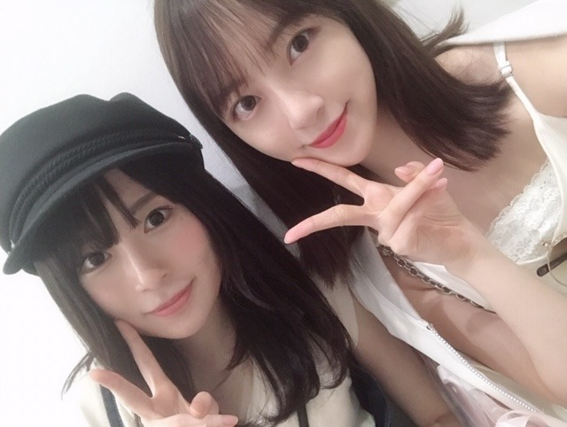

2019/0820Tue黒糖ってあまいのね
おいぬさまとまったりする時間がなによりも癒し〜☺︎

そういえば少しの時間だけだけど
欅坂46の長沢菜々香ちゃんとお買い物してカフェにいきました☺︎
ずっと遊ぶ約束していたから叶って良かった！
なーこちゃん、まったりしてるから話しやすくて楽しかったなぁ
またすぐ遊ぶんだ〜
充実した時間でした！
喉がカスカスだ〜
どうしたんだろ〜。泣
では☺︎
2019/08/20 21:18
コメント(296)
人がいるところでは難しいから
家とか部屋でひとり、
ひとりじゃなくても優しい仲間とでも良いけれど
考えてしまうことがあったとき、嫌な気分のときは
無理やりでもそっと頬を緩めて笑顔をつくると心も安らぐよ〜(^o^)
そんなことできない気分のときもあると思うけどもし気が向いたら試してみてねー！
綺麗事ではなくて、
それだけでも自然と
幸せな気持ちへと少しずつ動いて、心の均衡が保たれると思っとる！
何を伝えたらいいか迷ったけれど
未央奈が素直な気持ちを伝えてくれとるから自分が伝えたいことを伝えればいいのかなと考えました。
微力ながら未央奈のためになれればと思ったから書きました！
家とか部屋でひとり、
ひとりじゃなくても優しい仲間とでも良いけれど
考えてしまうことがあったとき、嫌な気分のときは
無理やりでもそっと頬を緩めて笑顔をつくると心も安らぐよ〜(^o^)
そんなことできない気分のときもあると思うけどもし気が向いたら試してみてねー！
綺麗事ではなくて、
それだけでも自然と
幸せな気持ちへと少しずつ動いて、心の均衡が保たれると思っとる！
何を伝えたらいいか迷ったけれど
未央奈が素直な気持ちを伝えてくれとるから自分が伝えたいことを伝えればいいのかなと考えました。
微力ながら未央奈のためになれればと思ったから書きました！
未央奈となーこちゃんコンビ最強説！
大好き♡♡
モバメみたよー！！
文章読んだけど、堀ちゃんの言葉って正しいね！
たまにくる、こういうモバメで堀ちゃんファンとして
誇りです！！
話は変わるけど、堀ちゃんの舞台も見てみたいです
じょしらく・あさひなぐの舞台みたけど、またみたい
文章読んだけど、堀ちゃんの言葉って正しいね！
たまにくる、こういうモバメで堀ちゃんファンとして
誇りです！！
話は変わるけど、堀ちゃんの舞台も見てみたいです
じょしらく・あさひなぐの舞台みたけど、またみたい
僕も犬を３匹飼ってましたが
１匹は９年前にもう１匹は２ヶ月前に
亡くなりました悲しいです
未央奈ちゃんも犬といっぱい思い出作ってね
１匹は９年前にもう１匹は２ヶ月前に
亡くなりました悲しいです
未央奈ちゃんも犬といっぱい思い出作ってね
私もみおなに飼われたいなぁ
喉、大切に、マヌカハニーやろ？
喉、大切に、マヌカハニーやろ？
風邪のまえぶれかも。忙しい未央奈ちゃんだから、
体調に気おつけて下さい。ワンちゃんとのツーショット、
癒されます。欅坂のメンバーとも仲いいのはじめて知った
また、ブログ更新待ってます。楽しみにしてます。
でわ。
体調に気おつけて下さい。ワンちゃんとのツーショット、
癒されます。欅坂のメンバーとも仲いいのはじめて知った
また、ブログ更新待ってます。楽しみにしてます。
でわ。
堀ちゃん、かわいい〜
好き。
更新ありがとうございます。
なーこさんと、意外！
なーこさんと、意外！
未央奈ブログ更新ありがとう
長沢くんと遊んだんやね！！なんか2人とも雰囲気が似てるから合うかもね！！
それじゃあまたの…
しんちゃん
長沢くんと遊んだんやね！！なんか2人とも雰囲気が似てるから合うかもね！！
それじゃあまたの…
しんちゃん
なーこちゃんと遊んだんですね！
どんな会話をしてたのか想像がつかない(笑)。
未央奈ちゃんは意外な交友がたくさんありますね♪☆
どんな会話をしてたのか想像がつかない(笑)。
未央奈ちゃんは意外な交友がたくさんありますね♪☆
また乃木中での活躍みたい
こんばんは！ 堀ちゃんなーこちゃんとも仲良いんだ！知らなかった～ ゆっかーとの2ショットも期待してます(笑)
ブログ更新ありがとう！
未央奈ちゃん人脈広いね！
今日はレコメン！楽しみ楽しみ（＾ν＾）
2週間ぶり生放送絶対に聞くね〜！
喉お大事にしてね！
未央奈ちゃん人脈広いね！
今日はレコメン！楽しみ楽しみ（＾ν＾）
2週間ぶり生放送絶対に聞くね〜！
喉お大事にしてね！
おいぬさまもかわいいけれど
堀ちゃんが色っぽい！
次のシングルフロントおめでとう
堀ちゃんが色っぽい！
次のシングルフロントおめでとう
どーもーーー！！！
残暑お見舞い申し上げます♪
きょんばんはーーー！！！
喉がカスカスって神宮まで
間に合うのかーーー？？？
The one and onlyーー！！
天井天下唯我独尊
魂の男ルカ・モドリッチに感動ー涙
どぅえーーーす！！！
長沢くん絵がうまいから
堀ちゃんとの似顔絵対決とか見てみたい！
ワンコうらやましいですなー笑
プティとニコルの見分け方って
どこっすか？笑笑
残暑お見舞い申し上げます♪
きょんばんはーーー！！！
喉がカスカスって神宮まで
間に合うのかーーー？？？
The one and onlyーー！！
天井天下唯我独尊
魂の男ルカ・モドリッチに感動ー涙
どぅえーーーす！！！
長沢くん絵がうまいから
堀ちゃんとの似顔絵対決とか見てみたい！
ワンコうらやましいですなー笑
プティとニコルの見分け方って
どこっすか？笑笑
ほりっぴ～、ナンチです♪
ブログ更新ありがとう～
今年の夏風邪は喉風邪でね
しかも風邪の症状は治っても喉と咳はなかなか良くならなくて長引くんだって
実は自分もそうなってます
けっこうツラいからほりっぴ～は気をつけてね
ブログ更新ありがとう～
今年の夏風邪は喉風邪でね
しかも風邪の症状は治っても喉と咳はなかなか良くならなくて長引くんだって
実は自分もそうなってます
けっこうツラいからほりっぴ～は気をつけてね
俺前世犬だから、、笑
未央奈は武家の良いとこの娘っぽいよな。笑笑
未央奈は武家の良いとこの娘っぽいよな。笑笑
乃木坂46結成8周年おめでとう！
更に上を目指して！レッツゴー！
更に上を目指して！レッツゴー！
こんばんは。
プティー？？
と未央奈どっちが目おおきい？
喉お大事にね。。
プティー？？
と未央奈どっちが目おおきい？
喉お大事にね。。
未央奈、今日は乃木坂46結成8周年！！
おめでとう❤️
これからもずっと、未央奈も乃木坂46も大好きだよ～！
おめでとう❤️
これからもずっと、未央奈も乃木坂46も大好きだよ～！
みおな
今日もお疲れ様です
どっちがプティかニコルか忘れてしまいましたが、犬との写真可愛いです（すっぴんなのかな？）
ナチュラルメイクとかありのままのみおなが一番好きなので、これからもたくさん写真貼って下さい（何があっても今この瞬間のみおなが一番です）
当然、しっかりメイクしてるやつも好きです
要は全部好きって事だけど、それだと説得力がないからその中でもナチュラルが一番という事です
喉がカスカスなの大事にして下さい
もうすぐ神宮ライブも控えてますが、無理だけはしないようにして下さい
喉を潤す為に水分をしっかり取って下さい
レコメン聴きます
ありがとうございました
今日もお疲れ様です
どっちがプティかニコルか忘れてしまいましたが、犬との写真可愛いです（すっぴんなのかな？）
ナチュラルメイクとかありのままのみおなが一番好きなので、これからもたくさん写真貼って下さい（何があっても今この瞬間のみおなが一番です）
当然、しっかりメイクしてるやつも好きです
要は全部好きって事だけど、それだと説得力がないからその中でもナチュラルが一番という事です
喉がカスカスなの大事にして下さい
もうすぐ神宮ライブも控えてますが、無理だけはしないようにして下さい
喉を潤す為に水分をしっかり取って下さい
レコメン聴きます
ありがとうございました
いつもブログ更新ありがとう！
ニコル君とまったりしてる未央奈ちゃんの画像で
私は癒されてますよ笑
いつもありがとうね！
喉は大丈夫かな？
冷房にあたりすぎかもしれないから気をつけてね！
ゲリラ豪雨など天気が変わりやすいから体調には気を付けてくださいね！
ニコル君とまったりしてる未央奈ちゃんの画像で
私は癒されてますよ笑
いつもありがとうね！
喉は大丈夫かな？
冷房にあたりすぎかもしれないから気をつけてね！
ゲリラ豪雨など天気が変わりやすいから体調には気を付けてくださいね！
未央奈さん、レコメン聴きながらコメントします。
声キツそうだね、いつもの透き通ったかわいい声に張りがないね。無理しないでね。
中島美嘉のものまねを地上波で披露するの期待していいんだよね(笑)
楽しみです。
2期生の仲間との遊んだショット楽しみでーす。
喉早く治るといいね。
バイバーイ。
声キツそうだね、いつもの透き通ったかわいい声に張りがないね。無理しないでね。
中島美嘉のものまねを地上波で披露するの期待していいんだよね(笑)
楽しみです。
2期生の仲間との遊んだショット楽しみでーす。
喉早く治るといいね。
バイバーイ。
よっ！
レコメン聴いてて思ったけど、
鼻つまったときは、時期に関係なく
ナザール(青色)ていう鼻炎スプレー使うとかなり違うよ。花粉症とか風邪ひいたら、仕事の前に使うだけでも全然違うから。
よかったら、使ってみて。500円ぐらいだから。
レコメン聴いてて思ったけど、
鼻つまったときは、時期に関係なく
ナザール(青色)ていう鼻炎スプレー使うとかなり違うよ。花粉症とか風邪ひいたら、仕事の前に使うだけでも全然違うから。
よかったら、使ってみて。500円ぐらいだから。
神宮までに治りますように(*´ω｀*)
ブログ更新ありがとう！
蘭世と絢音と遊んだお話は？笑
実はなーこだったのか！！！笑
蘭世と絢音と遊んだお話は？笑
実はなーこだったのか！！！笑
鹿です⊂(ο･㉨･ο）⊃”くまﾃﾞｽ…
乃木坂46ちゃん♡8周年おめペロ!これからもそっと応援してまいりまふふふ(o≧▽ﾟ)oニパッ
新制服を着た堀殿♡めちゃかわでうれぴーぽーo(￣◎￣)o ﾊﾞﾌﾞｩ♡
ほんじつもかつ丼パワー100万馬力でばいころまる( ;-(ｴ)-)ゞｸﾏｯﾀﾅｧ…
乃木坂46ちゃん♡8周年おめペロ!これからもそっと応援してまいりまふふふ(o≧▽ﾟ)oニパッ
新制服を着た堀殿♡めちゃかわでうれぴーぽーo(￣◎￣)o ﾊﾞﾌﾞｩ♡
ほんじつもかつ丼パワー100万馬力でばいころまる( ;-(ｴ)-)ゞｸﾏｯﾀﾅｧ…
堀ちゃんブログありがと！
喉大丈夫ですか！
喉大丈夫ですか！
乃木坂結成8周年おめでとう！
節目の年を向かえられて嬉しいよ！
長いようで短い8周年。たくさん辛いことも乗り越え、たくさんの卒業していっちゃったな。
今年は平成から令和に変わったけど、平成では
今年の2月になぁちゃんの卒業は今でも考えるだけで悲しいな
令和になり乃木坂のキャプテン桜井玲香の卒業は
衝撃だったな～
それを考えたら8周年までの道のりは険しいもの
だったな～！
節目の年を向かえられて嬉しいよ！
長いようで短い8周年。たくさん辛いことも乗り越え、たくさんの卒業していっちゃったな。
今年は平成から令和に変わったけど、平成では
今年の2月になぁちゃんの卒業は今でも考えるだけで悲しいな
令和になり乃木坂のキャプテン桜井玲香の卒業は
衝撃だったな～
それを考えたら8周年までの道のりは険しいもの
だったな～！
みおなちゃん、
忙しいだろうけどお大事にしてください(>_<)
忙しいだろうけどお大事にしてください(>_<)
未央奈ちゃん、ブログ更新ありがとうございます！
お犬さんとの空気感が感じられて、とても素敵な写真ですね！
欅ちゃんにも、仲良しの子がいるのですね！
未央奈ちゃんの交友関係の広さは本当にすごいと思いますし、尊敬しています！！
一つ一つの出会いを大切にしていて、本当に素敵ですね！！
この前のブログでも言っていて、アレルギーか何かなのですかね…
早く治ると良いですね。
未央奈ちゃん、大好きです
お犬さんとの空気感が感じられて、とても素敵な写真ですね！
欅ちゃんにも、仲良しの子がいるのですね！
未央奈ちゃんの交友関係の広さは本当にすごいと思いますし、尊敬しています！！
一つ一つの出会いを大切にしていて、本当に素敵ですね！！
この前のブログでも言っていて、アレルギーか何かなのですかね…
早く治ると良いですね。
未央奈ちゃん、大好きです
こんばんはお疲れさま✨
ワンちゃん癒されるね～✨
俺も添い寝したいよ(笑)✨
堀ちゃんもおかあさんみたいな表情がめっちゃ良いよ☺
うん、なんか癒されます☺
あと、欅の長沢君やないかい？(笑)
堀ちゃんと並んでる写真、長沢君表情大人に見えたよ✨
二人とも良い感じやね。
8月21日乃木坂46結成8周年おめでとうございます☺
これからも切磋琢磨して頑張ってほしいです。
乃木坂上り坂✨
応援しとうよ☺
ではではまたね。
体調には気をつけてくださいね。
ほなね、堀ちゃん☺
ワンちゃん癒されるね～✨
俺も添い寝したいよ(笑)✨
堀ちゃんもおかあさんみたいな表情がめっちゃ良いよ☺
うん、なんか癒されます☺
あと、欅の長沢君やないかい？(笑)
堀ちゃんと並んでる写真、長沢君表情大人に見えたよ✨
二人とも良い感じやね。
8月21日乃木坂46結成8周年おめでとうございます☺
これからも切磋琢磨して頑張ってほしいです。
乃木坂上り坂✨
応援しとうよ☺
ではではまたね。
体調には気をつけてくださいね。
ほなね、堀ちゃん☺
喉のカスカスが１番心配だよ。
早く良くなります様に。
あと、乃木坂結成８周年おめでとう。
これからも上目指して頑張ってね。
早く良くなります様に。
あと、乃木坂結成８周年おめでとう。
これからも上目指して頑張ってね。
風邪ひかないように気をつけてね！！
未央奈さんの目、いぬさんとほぼ同じぐらいの大きさです
綺麗です。
喉カスカスなら、少し熱いお湯(40度)とか補充したらどうですか。炭酸飲料をしばらくやめたほうがいいです。中華圏の人はだいたいそうします。日本人はどうしますか。
綺麗です。
喉カスカスなら、少し熱いお湯(40度)とか補充したらどうですか。炭酸飲料をしばらくやめたほうがいいです。中華圏の人はだいたいそうします。日本人はどうしますか。
世界で一番気になる女性です。妻には内緒！
暑いけどお大事に！ 息子と応援してます。
暑いけどお大事に！ 息子と応援してます。
黒塔かチェスでルークはルーキーの意味があるから
君らはすごいよね。
犬かわいいね
君らはすごいよね。
犬かわいいね
レコメンでも少し声が違ってたね。幕張の全握が、心配です。少しでも良くなってます様に。
へぇ〰️(^.^)意外な友達ですねぇ(^^)d長沢さんとは( ｡ﾟДﾟ｡)乃木中も好きだけど欅って書けないも好き(笑)やはり堀画伯の絵は凄いね(￣∇￣)いくちゃんのもスゲーけど(笑)
のどお大事にしてね！
コンビニで、黒蜜味のお菓子を見つけて、普段あまり食べないけど、そういえば堀さんのブログでそんな内容のこと書いてあったなと思って買いました。セブンイレブンでね！
…乃木坂46の影響力、パない(笑)
でも、よく考えたら、黒蜜じゃなくて黒糖でしたね
まあ、おいしかったからいいか
僕は乃木坂46のファンになって3年になるんですけど、今までどんな感じかよくわからないからモバメ取ってなかったんですけど、最近取り始めてですね。
もちろん、堀さんのモバメもね！
普段あまり聞けないようなメンバーの話が聞けていいなと思います。
そう、普段聞けないような話。それは時にメンバーからのSOSだったりするのかなと感じました！
辛いことはぜひとも、ブログなりモバメなりに書いてください。強くおすすめします
ちょっと長くなったけど、本当に健康には気を付けて！
…乃木坂46の影響力、パない(笑)
でも、よく考えたら、黒蜜じゃなくて黒糖でしたね
まあ、おいしかったからいいか
僕は乃木坂46のファンになって3年になるんですけど、今までどんな感じかよくわからないからモバメ取ってなかったんですけど、最近取り始めてですね。
もちろん、堀さんのモバメもね！
普段あまり聞けないようなメンバーの話が聞けていいなと思います。
そう、普段聞けないような話。それは時にメンバーからのSOSだったりするのかなと感じました！
辛いことはぜひとも、ブログなりモバメなりに書いてください。強くおすすめします
ちょっと長くなったけど、本当に健康には気を付けて！
堀ちゃんもなーこちゃんも応援してるから
その2ショットは嬉しすぎる!!
その2ショットは嬉しすぎる!!
喉大丈夫？
欅坂46のメンバーとも仲良しなのかな？
欅坂46のメンバーとも仲良しなのかな？


黒糖俺も好きだよ、
喉大丈夫？お大事に